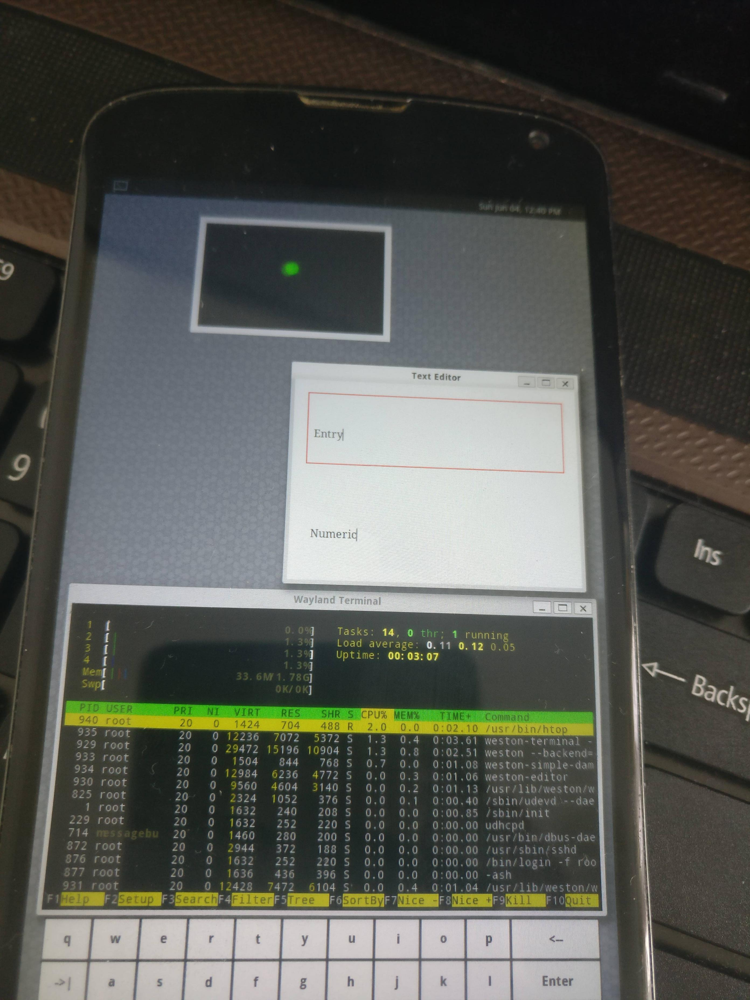

Google Nexus 4 (lg-mako)
| Currently the device is booting into a black screen, see pmaports#209. Help with resolving this is welcome. Please remove this note when the issue has been fixed. |
|
 LG Nexus 4 running Weston | |
| Manufacturer | Google (LG) |
|---|---|
| Name | Nexus 4 |
| Codename | lg-mako |
| Released | 2012 |
| Category | testing |
| Original software | Android on Linux 3.4 |
| Hardware | |
| Chipset | Qualcomm Snapdragon S4 Pro (APQ8064) |
| CPU | Quad-core 1.5 GHz Krait |
| GPU | Adreno 320 |
| Display | 768x1280 IPS |
| Storage | 8/16 GB |
| Memory | 2 GB |
| Architecture | armv7 |
| Unixbench Whet/Dhry score | 1233.4 |
{kind=link}
| USB Networking |
Works
|
|---|---|
| Flashing |
Works
|
| Touchscreen |
Works
|
| Display |
Broken
|
| WiFi |
Works
|
| FDE |
Works
|
| Mainline |
Partial
|
| Battery |
Works
|
| 3D Acceleration | |
| Audio | |
| Bluetooth | |
| Camera | |
| GPS | |
| Mobile data | |
| SMS | |
| Calls | |
| USB OTG |
Works
|
| NFC | |
| Accelerometer | |
|---|---|
| Magnetometer | |
| Ambient Light | |
| Proximity | |
| Hall Effect | |
| Barometer | |
| Power Sensor | |
| Camera Flash | |
|---|---|
| Keyboard | |
| Touchpad | |
| USB-A | |
| HDMI/DP | |
| Ir TX | |
| Ir RX | |
| Stylus | |
| Haptics | |
| Ethernet | |
| FOSS bootloader | |
|
This device is based on the Snapdragon 600. See the SoC page for common tips, guides and troubleshooting steps |
Installation
| FDE (full disk encryption) seems to be broken for lg-mako currently, see pmaports#209 |
| No backend is available for user interface weston - it will boot to black/blank screen, see Weston troubleshooting. |
pmbootstrap init pmbootstrap install (enter fastboot, see below) pmbootstrap flasher flash_rootfs pmbootstrap flasher boot
To flash the kernel, you can choose pmbootstrap flasher flash kernel (but charging and power off doesn't work as expected anymore, see below).
Attempting to flash an arbitrarily large rootfs (here xfce4 ui, >1GB), will fail:
$ fastboot flash userdata lg-mako.img
Sending 'userdata' (1129472 KB) FAILED (remote: 'data too large')
fastboot: error: Command failed
Note that this is not related to the destination partition size. The getvar option to fastboot does not list a max-download-size variable. Unfortunately the fastboot -S flag is not useful since the image is not sparse. An untested tedious workaround may be to just flash a smaller ui image and manually apk del/add.
Entering "Fastboot mode"
Hold Volume Down + Power, let go of Power once the device display does something (e.g. turns from battery icon to black screen).
Reverting to factory
Reflashing a factory image after a pmOS install may hang. For the final factory image (LMY48T), the display will show a looping animation of rotating / flying colored dots on a black background (but be patient, wait at least 10 minutes to confirm hang). Follow the instructions at Reverting to stock (manta). The first time setup screen should follow the rotating dots (perhaps 8 minutes). During the flash the back of the device may warm noticeably.
Charging and power off (after flashing the postmarketOS kernel)
You don't have to flash the kernel! pmbootstrap flasher boot is also working! |
You can flash the postmarketOS kernel, but instead of charging the battery, it will boot straight into postmarketOS (or the on screen keyboard to type in the password). Right now, the best way to charge it from that situation is to boot the recovery TWRP.
You can properly turn the device off by unplugging the usb cable, then booting into fastboot, then choosing power off.
Wifi
We need to package the wcnss.* files for wifi. A version from 2015 can be found here.
Hardware status (downstream kernel)
Output from hwtest
hwtest output:
Category Model Path Status Value
framebuffer msmfb44_80601 /sys/class/graphics/fb0 working U:768x1280p-0
framebuffer msmfb44_70001 /sys/class/graphics/fb1 working
framebuffer msmfb44_a0001 /sys/class/graphics/fb2 working
input hs_detect /dev/input/event5 working
input apq8064-tabla-snd-card Headset Jack /dev/input/event4 working
input apq8064-tabla-snd-card Button Jack /dev/input/event3 working
input touch_dev /dev/input/event2 working
input keypad_8064 /dev/input/event1 working
input pmic8xxx_pwrkey /dev/input/event0 workingCPU tuning
CPU tuning:
The default governor is battery-draining "performance" (see cpufreq-info, package cpufrequtils). Thermal throttling seems to be activated in this case (dmesg):
[ 552.307952] msm_thermal: Limiting cpu0 max frequency to 1350000Try the "ondemand" governor (via cpufreq-set).
Charging
Charging:
Charging appears to work (during USB networking at least). Monitor via systool -v -c power_supply|grep capacity. Charging current seems to be reported as a negative value. (Try systool -v -c power_supply|grep CURR.
Charging updates also spam dmesg:
[ 1366.506774] pm8921_chg_status_show: pm8921_chg_status_show , true ! buf = 1
[ 1366.506774] , is_charging = 1
[ 1382.078124] adjust_soc: ibat_ua = -344300, vbat_uv = 4323186, soc = 84, batt_temp=253
[ 1402.078124] adjust_soc: ibat_ua = -340800, vbat_uv = 4326126, soc = 85, batt_temp=253The sensors command (package lm-sensors) shows a couple of charging-related(?), non-zero thermal sensor values (pm8921_tz-virtual-0 and pm8821_tz-virtual-0).
Sensors
For reference, sensor information from sensorsandbox (f-droid) on mako 16GB; note that in addition to hardware-based sensors, it presumably includes software-based / derived sensors.
sensor details (sensorssandbox)
| name | vendor | version | type |
|---|---|---|---|
| LGE acceleration sensor | Invensense | 1 | 1 |
| LGE magnetometer sensor | AKM | 1 | 2 |
| orientation | Qualcomm | 1 | 3 |
| LGE proximity sensor | Avago | 2 | 8 |
| LGE light sensor | Avago | 2 | 5 |
| LGE gyroscope sensor | Invensense | 1 | 4 |
| LGE barometer sensor | Bosch | 1 | 6 |
| LGE magnetometer sensor | AKM | 1 | 14 |
| LGE gyroscope sensor | Invensense | 1 | 16 |
| gravity | Qualcomm | 1 | 9 |
| linear acceleration sensor | Qualcomm | 1 | 10 |
| rotation vector | Qualcomm | 1 | 11 |
| significant motion | Qualcomm | 1 | 17 |
| game rotation vector | Qualcomm | 1 | 15 |
Mainline
| See The Mainline Kernel for a general introduction to mainlining. |
Current tree can be found here Qualcomm_Snapdragon_600_(APQ8064)#Mainlining
theohussey's mainlining progress was here. Read on for generic instructions of what would need to be done.
That most peripherals of the mako should work with mainline as well, once they are enabled in the DTS file. In fact, @vetzki reported in #1079 that the mako boots when using exactly the same DTS as the one from flo (this is not recommended, as misconfiguring your device like that may damage it). SSH appears to be working for a short time before getting kicked out, the display does not work.
A good way forward would be using a minimal version of the flo DTS, where everything but USB is deleted, and fixing USB / trying to get the display working with the DSI Panel Porting Guide. The downstream DTSI files that need to be ported to the upstream kernel are probably located here, and I guess the exact panel name appears when running dmesg after a successful boot (I did not verify this). Please expand this when you're working on it, and report your progress in #postmarketOS. Check out the Mainline Guide.
Partition Layout
Partition layout:
# fdisk /dev/block/mmcblk0
Found valid GPT with protective MBR; using GPT
Command (m for help): p
Disk /dev/block/mmcblk0: 15269888 sectors, 3360M
Logical sector size: 512
Disk identifier (GUID): 98101b32-bbe2-4bf2-a06e-2bb33d000c20
Partition table holds up to 28 entries
First usable sector is 34, last usable sector is 15269854
Number Start (sector) End (sector) Size Code Name
1 1024 132095 64.0M 0700 modem
2 132096 133119 512K 0700 sbl1
3 133120 134143 512K 0700 sbl2
4 134144 138239 2048K 0700 sbl3
5 138240 139263 512K 0700 tz
6 139264 184319 22.0M 0700 boot
7 184320 229375 22.0M 0700 recovery
8 229376 230935 780K 0700 m9kefs1
9 230936 232495 780K 0700 m9kefs2
10 232496 234055 780K 0700 m9kefs3
11 234496 235519 512K 0700 rpm
12 235520 236543 512K 0700 aboot
13 236544 237567 512K 0700 sbl2b
14 237568 241663 2048K 0700 sbl3b
15 241664 242687 512K 0700 abootb
16 242688 243711 512K 0700 rpmb
17 243712 244735 512K 0700 tzb
18 244736 245759 512K 0700 metadata
19 245760 278527 16.0M 0700 misc
20 278528 311295 16.0M 0700 persist
21 311296 2031615 840M 0700 system
22 2031616 3178495 560M 0700 cache
23 3178496 15267839 5903M 0700 userdata
24 15267840 15268863 512K 0700 DDR
25 15268864 15269854 495K 0700 grow
Community Info
postmarketOS users that own the device
- AnimalFriend11
- Dcambie (Notes: Testing)
- Gouchi (Notes: pmaports#209)
- Haeckle
- Ichernev
- Lantizia
- Lazcode (Notes: Needs new battery)
- Lifehackerhansol (Notes: 16GB model)
- Linmob (Notes: 8GB, runs Ubuntu Touch)
- Maff (Notes: Screen-swapped with another, deader Nexus 4)
- Ollieparanoid
- Otto (Notes: 4 with broken screens)
- Roboe (Notes: variant: mako 16GB, version-hardware: rev_11; working SlimPort HDMI adapter available; running UBPorts stable)
- Russanandres (Notes: quadrupleboot)
- TechEdison
Maintainers
- Ivan Belokobylskiy
Contributors
- ollieparanoid
- PabloCastellano and robb4 on IRC: Workaround for red screen bug (#54)
See also
- freedreno: Nexus 4
- Device package
- Kernel package
- Tutorial: UART debug cable
- Official proprietary drivers
- #1079 The Nexus 7 DTB is so similar, it even boots
- linux-postmarketos#9 Attempt at writing a new DTS for the Nexus 4